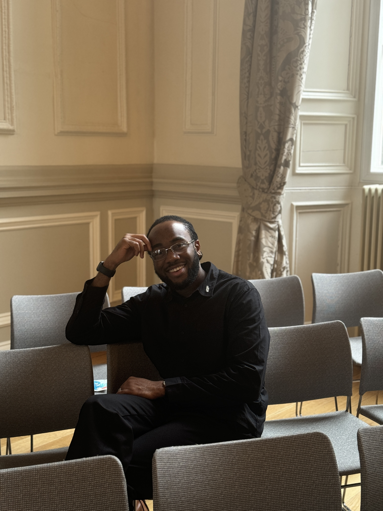

LOREN EWALEIFO
Contact Me

Summary
Energetic and driven professional with a proven history of successfully delivering high-priority projects across IT,
quality assurance, and hospitality sectors. Adept at problem-solving and adaptable to shifting project requirements,
consistently achieving high-quality results in fast-paced environments. Possesses strong analytical skills with
expertise in quality assurance, software testing, stakeholder collaboration, and customer service. Committed to
accuracy, continuous improvement, and process optimization.
Education
Aston University | Birmingham, UK
MSc Information Systems and Business Analysis
Work Experience
National Exhibition Centre (NEC), Birmingham (February 2024 – Till Present)
Hospitality Team Leader
Duties:
- Supervise a team, manage performance, and provide coaching to enhance service delivery.
- Handle high volumes of customer interactions, resolving issues professionally and efficiently.
- Manage VIP guest relations, complaints, and conflict resolution to maintain high service standards.
- Coordinate with event organizers, vendors, and other departments to ensure seamless operations.
- Ensure compliance with health and safety regulations and company policies.
National Exhibition Centre (NEC), Birmingham (March 2023 – February 2024)
Hospitality Team Member
Duties:
- Worked in a fast-paced hospitality environment, delivering high-quality customer service.
- Delivered exceptional service in a dynamic hospitality setting, adapting to different roles as needed.
- Assisted in event execution, ensuring efficient operations and guest satisfaction.
- Adhered to company policies and industry standards while maintaining a high level of professionalism.
KPMG, Nigeria (September 2021 – December 2022)
Auditor
Duties:
- Conducted financial audits, ensuring compliance with industry-specific regulations.
- Performed risk assessments and evaluated internal controls for process improvement.
- Collaborated with clients to address audit findings and recommend corrective actions.
- Prepared detailed reports summarizing audit results and compliance gaps.
Skills
- Business Analysis
- Risk Assessment & Compliance
- Financial Analysis / Auditing
- Customer Engagement & Communication
- Market Research
- Attention to Detail
- Interpersonal Skills
Additional Experience
- Owner – Ghosted Studios (November 2022 – Present)
- Bar Staff & Front-Line Hospitality - Mint People, Birmingham (February 2023 – January2024)
- Aston Global Ambassador- Aston University, Birmingham (January 2024 – Present)
Other